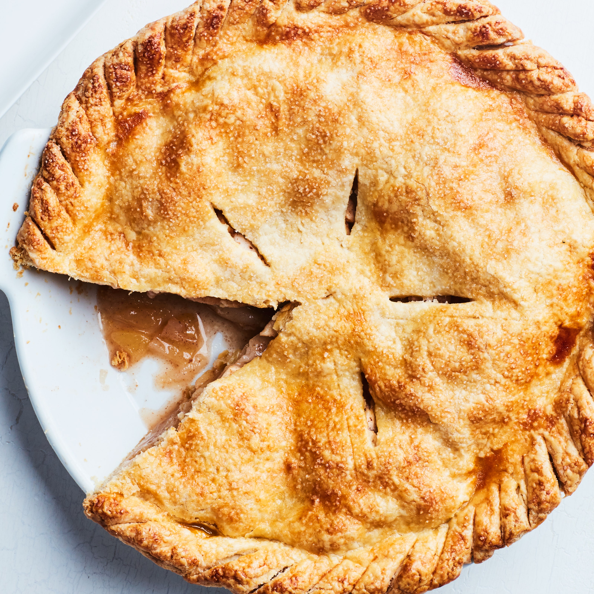

This apple pie is a surefire fall treat. The combination of two types of apples means we get the best of both worlds, a crisp texture and a sweet taste. It may seem like we're using a lot of apples, but it's important to start off with a lot because they shrink down during the parcooking stage, a necessary step to ensure they keep their shape.
Ingredients
- 2 portions pie crust
- 6 pounds of apples, split evenly between golden delicious and honeycrisp
- 1/3 cup sugar
- 1/3 cup brown sugar
- 1 tsp. lemon zest
- 1 tablespoon lemon juice
- 1 tsp. cinnamon
- 1/2 tsp. nutmeg
- 2 tablespoons cornstarch
Steps
- Peel and slice apples.
- Mix apples with rest of ingredients and let sit for 10 minutes.
- Parcook apples in dutch oven on low heat. Put on lid when they start to steam. Keep heat below 160 degrees and cook for 20 minutes.
- After 20 minutes remove lid and cook on medium high until juices thicken before allowing apple mixture to cool completely.
- Add one portion pie crust to pan.
- Add apple mixture.
- Drape second portion of pie crust over top and cut slits in center for venting.
- (Optional) Brush top with beaten egg white or milk and sprinkle sugar on top.
- Bake at 425 degrees on middle rack for 25 minutes and then at 375 degrees for 35 min. Do not remove pie when you reduce oven heat!